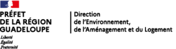
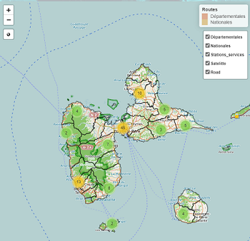
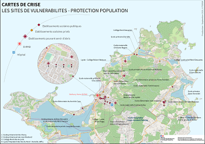
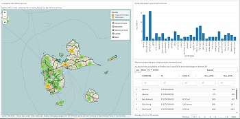

Atlas appui Gestion de Crise
Cartographie
Atlas de démonstration de cartographie interactive en appui à la gestion de crise
Sélection des cartes
Toutes les cartes
Stations services
Autres
Emplacement des stations services
Carte de démonstation
Cliquer pour accéder à la carte

Sites vulnérables
Exemple de carte PDF
Cliquer pour accéder à la carte

Autre exemple
Autre exemple de carte avec les stations services
Cliquer pour accéder à la carte
